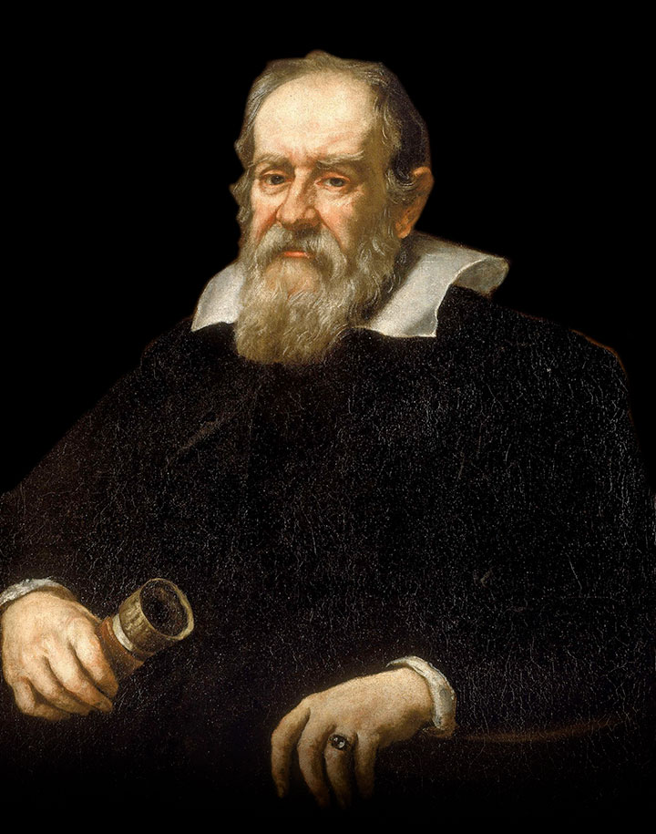

Galileo Galilei
Initializing
Welcome to the Map of Human Knowledge
🌍 Take Me Home
Take Me Home
Enter your address and the Earth will rotate to show you where you are in the cosmos.
Click and Drag to Spin the Satellite
VOYAGER 1
Launched 1977 — the farthest human-made object,
now over 15 billion miles from Earth
Explore on Wikipedia →
Made by Zero State Reflex
Map of Human Knowledge
drag · scroll · click to explore
More Info ↗
drag → spin
scroll → zoom
hover → attract
click → explore
● settling…